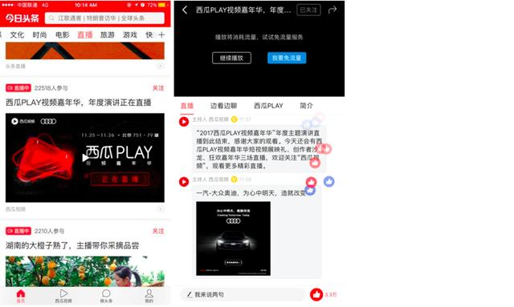

多维度巧妙植入
今日头条官方联动虎牙直播平台全程直播，线上扩大活动覆盖面，直播封面图植入logo露出，直播简介权益文案植入，直播前后权益文案植入。。
线上线下联动
会场主kv logo露出，奥迪TVC视频广告播出，和西瓜宣传片一同轮播，主会场主持人口播等方式展现品牌。
Audi Sport嘉年华仅仅在9月10日当天的投放，即收获了8.56%的高点击率，而之后2天奥迪选择的原生信息流广告亦获得了3.21%的点击率，超出预期，曝光完成率达到220%。
邀请到超过 80 位明星大咖及短视频红人到场。近 70 家媒体现场报道，输出超过 100 篇正面稿件，覆盖 90% 主流行业媒体，线上曝光量近 11 亿。